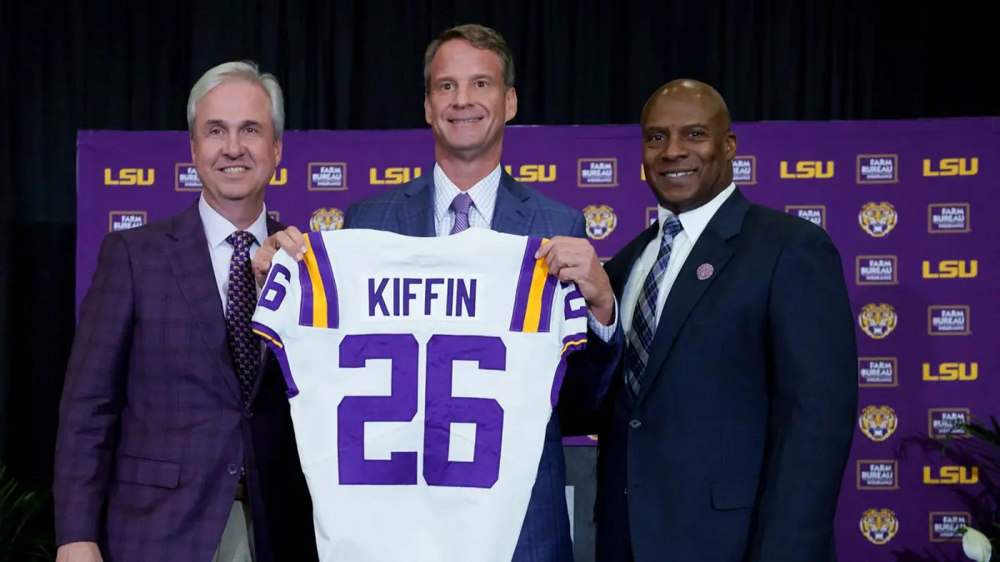
The Modern Era of College Head Coaching
Changes in the landscape of college football has caused a massive shift in how colleges should be approaching hiring their next head coach. It's no longer a game of just finding the right person to lead a team, but also finding someone that can create instant success. There's no scientific formula for winning, but there is a blueprint. Teams like Nebraska, Indiana, and Georgia Tech are leading the charge into the newest generation of head coach hirings at the college level, and it's inevitable that more power four teams will begin to follow in their footsteps. But, just because it worked for those teams doesn't mean it will work for everybody.
Hiring a Head Coach is a Different Ballgame in the Modern College Era. Why?
Ten years ago, hiring a head coach was a completely different ballgame than it is today. At the same time, that doesn't mean it was completely different. The biggest part of that process is still the most important part of the process today, and that's the man you're hiring to lead your team. You need the right person at the helm: a coach that truly wants to be the coach of your team, a coach that is willing to put their life on the line to win a national championship, a coach with the ability to build a staff under them that can prepare young men for the next level, and a coach that can put his players in a place to succeed on the field. Truth be told, somebody would have to be insane to fit all of those qualifications, and all of the best coaches in college football are just that: insane. There's not a lot of people on the planet that are going to be that guy. In fact, there might be just one. But for any team that wants to win at the highest level, they have to find that head coach, that one guy, and they have to trust him to take them to the top of college football.
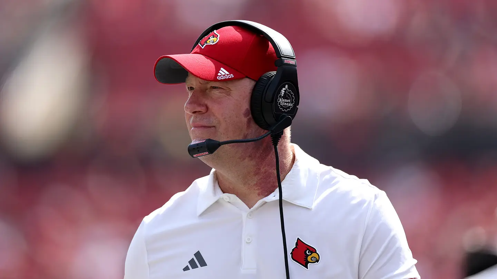
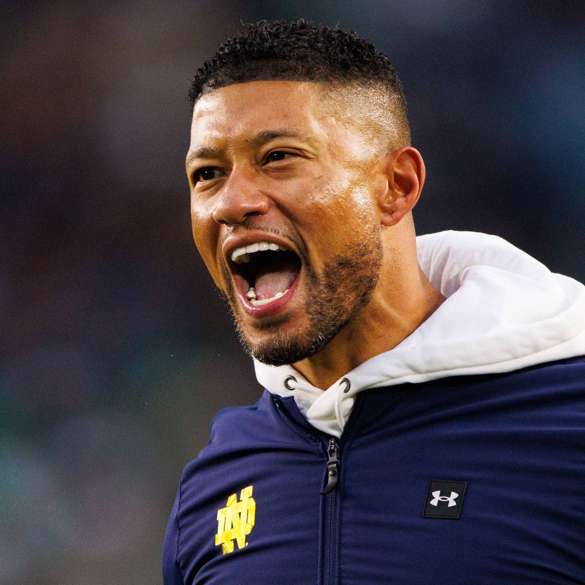
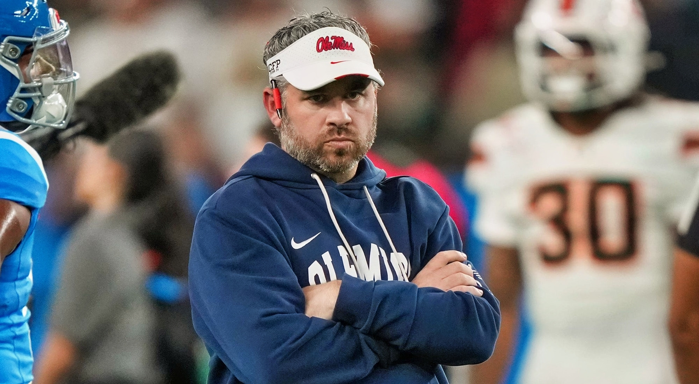
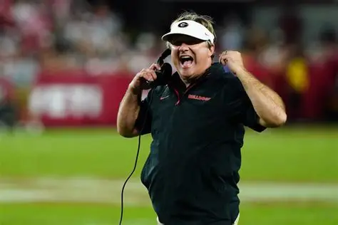
With that being said, being a new head coach is not as simple as it used to be. The transfer portal, and to a smaller extent NIL, has transformed the impact of an incoming head coach far beyond what it was before. There's more boxes to check for any potential candidate, and it's going to take more trust from schools in their next head coach. Specific teams, like Alabama with Kalen DeBoer, are able to poach pretty much whoever they want. However, most power four teams don't have the ability to bring in guys like Mizzou's Eli Drinkwitz or Louisville's Jeff Brohm, who seem extremely comfortable as the head coaches of their given teams. So, these teams turn to riskier hires, coaches that they put their faith in to lead them towards the top of college football. There's different strategies to hiring this kind of head coach, but seven have stuck out as difference-makers in this new world of college football. The 'Cignetti', the 'Key', the 'Rhule', the 'McGuire', the 'Franklin', the 'Brohm', and the 'DeBoer', as I'll call them for the rest of this deep-dive, have all transformed middling teams into true contenders and represent the future of head coaching at the college level.
The first kind of hire that we've seen be successful is what I'll call the 'Cignetti', and with how much his hire changed the trajectory of the Indiana organization I think it's completely fair to term it that way. To break it down into a basic definition, the 'Cignetti' is when a power four team hires a group of five head coach with a recent history of success and a solid base of potential incoming transfers on their team's roster. For any team hiring a head coach from a small school, there will inevitably be a huge outflux of current players that decide to hit the portal and high schoolers that reopen their recruitment. In order to combat this, it's necessary that a new head coach has a solid base of players from his former school that are going to transfer to play under him. Then, fill in whatever holes remain in the roster with transfer portal additions utilizing NIL funds and have a team that's able to instantly compete.
It's a simple concept, but getting the right head coach with the right group of players isn't easy in practice. First, the coach's former school has to be in the right regional area. A team in the northern part of the US can't try to pull this strategy off with a coach from the south, because his players probably won't follow him. Next, the coach's team has to have impact players that have at least one more year of eligibility, and more ideally two or three.
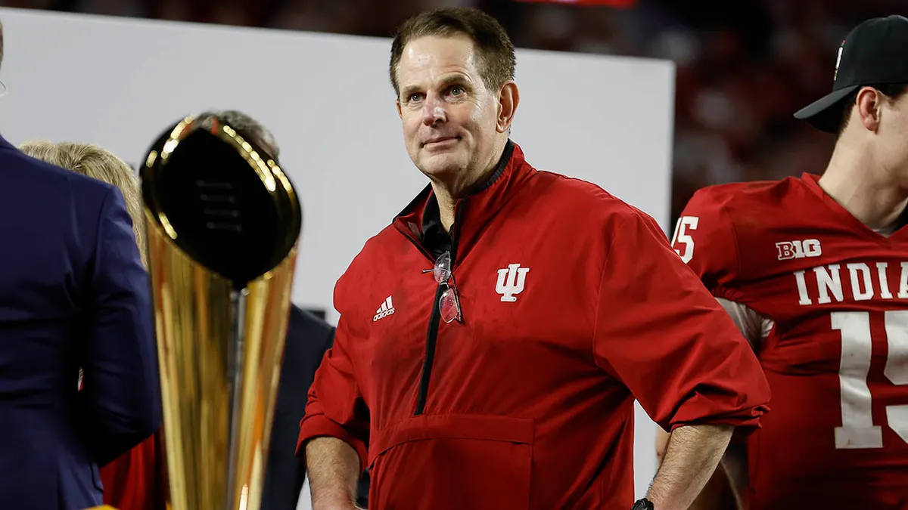
Instant success is critical for this strategy, as winning leads to bringing in better recruits which leads to more winning. If the coach a team's hired using this strategy doesn't win within the first couple of years, it probably means trouble. Worst comes to worst, and they're left with a head coach that doesn't have the roster to compete, doesn't have the NIL funds to bring in elite players, and can't bring in the caliber of recruit that they could before regardless of NIL. Instances of this have already begun to appear across college, and there's little chance of getting out of this hole without bringing change, and that means hiring another head coach.
Just because it can fail, however, doesn't mean that it's a bad strategy. I mean, I'm calling it the 'Cignetti' for a reason. Indiana brought over a ton of Cignetti's impact players at James Madison when he took the job, and it led them to instant success that's snowballed into their status as a National Championship contender. It's still early for them, but their instant success has meant a hell of a lot more NIL money moving forward and more interest from recruits in playing under Cignetti himself. That's not to say that any success at this strategy will go as smoothly as Cignetti's entrance at Indiana. His instant transformation of the team was incredible and unfeasible expectations for other teams looking to deploy it. What it does show, though, is how important some semblance of early success is to this strategy, and how quickly it can transform the culture of a team. If it goes well, it's probably the fastest way to change a program from bottom-feeders into contenders. However, that predicates on hiring the right coach in the right situation, and there aren't a lot of those guys to go around.
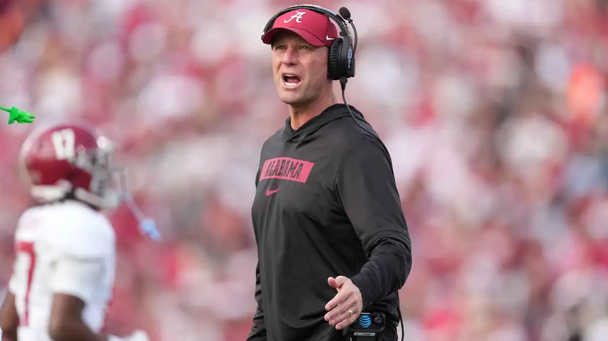
The 'DeBoer' is similar to the 'Cignetti', but is exclusive to only the top schools in the college football landscape. The latter takes on the risk of hiring a head coach that hasn't had success at the highest level of competition, where the former is defined by poaching a head coach that has a defined record of such success. The only four instances of this strategy in my dataset were Lincoln Riley to USC, Brian Kelly to LSU, Mario Cristobal to Miami, and of course DeBoer to Alabama. Realistically, there should be little risk of complete failure with this kind of move unless the coach you're hiring is a terrible human being, though as was previously mentioned it can only be done by the teams with the best reputations and resources in the college landscape. Even then, there's no guarantee such a candidate will be available on the market. Additionally, this kind of move will always require a massive financial investment. Most recently, we saw LSU go for this strategy again with Lane Kiffin. In general, the 'DeBoer' is obviously the best strategy in theory, but the amount of teams that have the ability to pull it off are few in practice.
The 'Brohm' is in the same vein, but instead with a well-regarded head coach that hasn't had significant playoff success. Determining between these classifications is up to the eye of the beholder, but I'd generally put any coach that has had success in the playoffs as a 'DeBoer', any coach with power four success as a 'Brohm', and then coaches that only have had success other conferences as 'Cignetti's. With the experience that comes with each of these tiers, it would assumedly follow that the 'Brohm' would be less risky than the 'Cignetti', but still contain significantly more risk than the 'DeBoer'.
The 'Franklin' is another strategy that includes hiring a former head coach, but in this case one that wasn't good enough at their old school. Usually, this occurs when a head coach is fired by one of the top tier schools in college after middling performances and a slightly smaller school decides to believe they can fare better at a smaller program. There's plenty of reasons that can lead to a coach's firing, oftentimes those reasons being beyond the hands of the coach themselves. Look towards Manny Diaz for a fantastic example of this strategy working to a tee. However, it's also created some of the less flattering hires in recent memory, Hugh Freeze and Les Miles being good examples of why hiring a recently fired head coach isn't usually the answer. Also included in this group are coaches that failed early in their career in significant stops, and worked their way back into conversations whether by working in the NFL or as an assistant coach or as a small school coach. These coaches, like Lane Kiffin, Steve Sarkisian, and Bret Bielema, seem to generally have greater success, but were too few in number to justify another group to themselves.

Next, we're on to the 'Key'. Brent Key has taken Georgia Tech from a team whose main point of relevance was getting beat by Georgia once a year and turned them into a real threat in the ACC, but that journey didn't start with a flashy new hire. After playing at Georgia Tech in college and starting his coaching career there as a graduate assistant, Key moved his way up through the coaching ranks at Western Carolina, UCF, and finally as the offensive line coach at Alabama under Nick Saban before rejoining GT as an assistant head coach and run game coordinator. Then, following a 1-3 start in 2022, he was given his chance. Key was promoted as the interim head coach, and the team seemed to find their way. They weren't perfect, they only finished the season 5-7, but the way the team competed during the latter half of the season made it clear. Key was their guy, and they couldn't let him go.
The 'Key' isn't about hiring an interim head coach, but rather about hiring the right person to be your head coach from within the organization, rather than looking elsewhere. It's a simpler strategy than the other two, but there's value in staying in-house for the next hire. First, there's already the framework of a staff in place. When hiring an outside candidate, they're going to want an entirely new group of coaches that they know and are familiar with. This isn't necessarily a bad thing, but for a lot of young coaches it's difficult for them to find the right guys for every single role. By going with an in-house hire, the coaches from the previous staff become prime options for roles in the new regime. Even on struggling teams, there's plenty of talented people on the coaching staff, so keeping those guys on board is valuable.
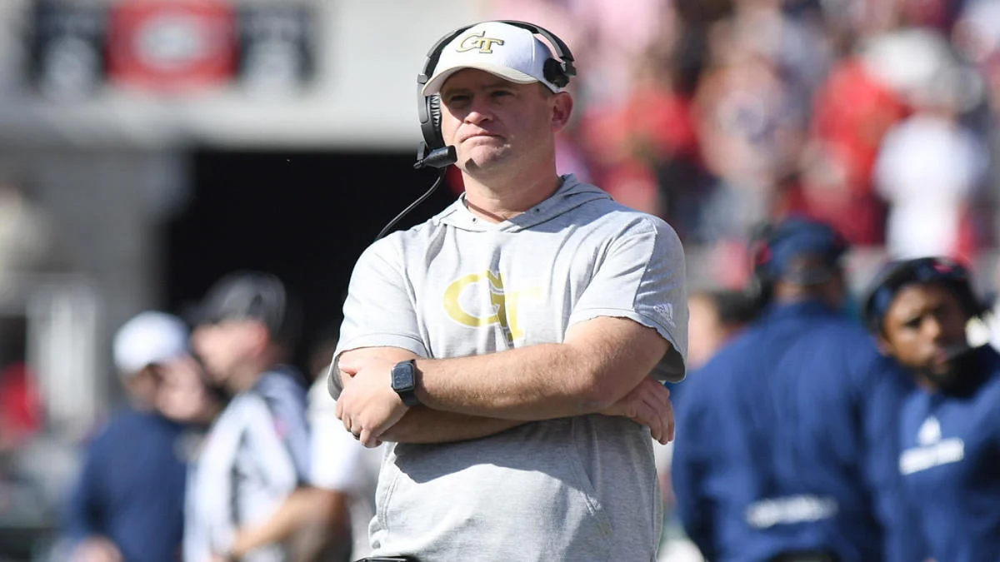
Bringing in a head coach from within also confirms stability in the recruiting scene. When hiring a coach from another regime, there's little guarantee that they'll be able to handle recruiting both in terms of high schoolers and college transfers. Different schools have different recruiting spheres and NIL funding, and that vastly changes how a coach has to operate in terms of recruiting. Additionally, hiring a new head coach means that by the time they're hired, most players have already committed to a school and the first year of recruiting is essentially a wash. By hiring in-house, teams mitigate all of these recruiting issues that come with the change of regime. The new head coach will already be familiar with how recruiting operates, and whatever players are already committed are far more likely to both stay committed and be in the future plans of the team. Again, there's intrinsic value to promoting someone in-house, but that doesn't mean it's always, or even usually, the right answer.
The most important part of hiring a head coach is still the person that you're hiring. If the right guy isn't within your organization, then you have to look elsewhere. But often, the right person to take the helm of a team is someone that knows the squad inside and out. It's not the strategy that will please the fanbase, they always want the splashiest move when an organization is failing, but a lot of the time the 'Key' is the right one.
The other strategies demand more instant success, but the 'Key' is built for long-term returns. It may take more time for the organization to shift into contenders, but stability affords time. The modern era of college football almost feels like it demands taking risks to compete at the top level, and the hiring of head coaches is the prime example of that. Teams are always looking for the next big thing, the hire that the media will call the next great head coach, but if the media was always right Matt Patricia would be one of the best head coaches in the NFL. Just because a hire is safe and stable doesn't mean it can't reap big returns, and Brent Key has made that clear. There's real value in promoting a head coach from within the organization, and it's a strategy that more and more teams should be looking to employ moving forward, regardless of how the public views the move.
The next strategy that is emerging as a viable option looks towards the professional game for a head coach, and it's what I'm calling the 'Rhule'. While Matt Rhule has been successful before at the college level, a large reason behind his hiring at Nebraska was his experience as a head coach in the NFL. Even if his time with the Panthers didn't go particularly well, that kind of experience is a driving force for bringing in top tier talent. Coaches with real NFL experience know what it takes for players to succeed at the next level, and that's a real draw for recruits looking to make that jump.
The value of using the 'Rhule' comes from good coaching and notoriety. Hiring a coach from the NFL level brings in someone familiar with how the game operates at the highest level, and even if they weren't overly successful at that level it's still valuable. Even the worst NFL team knows how to play winning football better than most college teams, regardless of the talent of their players. Bringing in a good candidate from the professional level means having an edge in scheme and team building compared to a comparable hire from the college game.
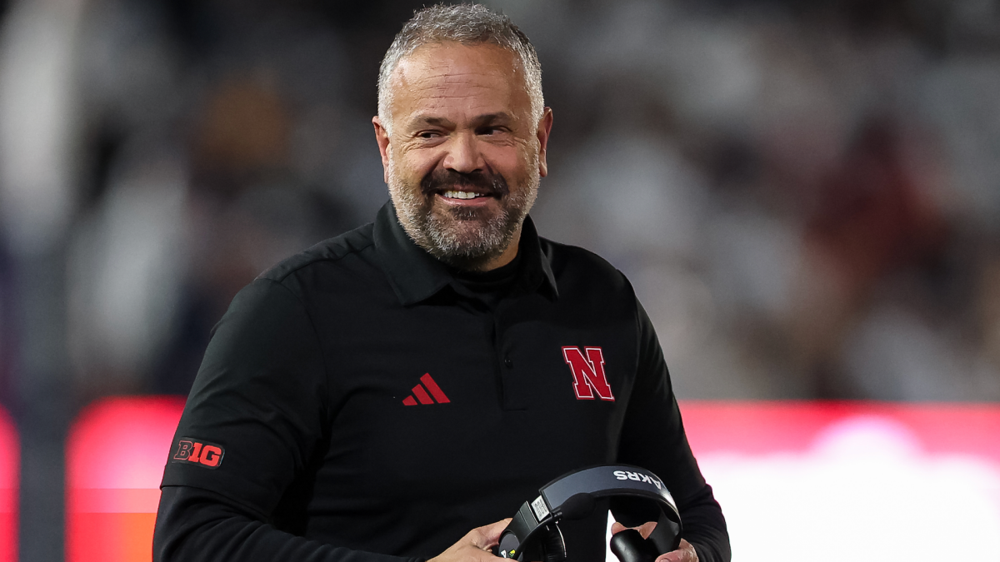
While the upsides to this method are clear and fairly consistent, the downsides are evident as well. First, it's extremely rare that someone with a depth of experience at the NFL level would consider a job in the college game. It takes the perfect storm: somebody that isn't a head coach in the NFL, would consider moving to the college level, has the right background to make them an intriguing candidate, and is also the right guy for the job. The bottom line is that candidates like that don't appear everyday. Nebraska took advantage when Rhule was on the market, but who knows when the next candidate of his acumen will be a possibility for teams looking for a head coach.
Next, and perhaps most importantly, most NFL coaches have little to no recruiting experience. Rhule himself was a special candidate in this regard, with his extensive and successful background as a college head coach at Temple and Baylor, but the majority of NFL coaches have limited experience at the college level. Recruiting is the backbone of college football, so hiring a head coach without proven recruiting acumen is a risk. It's important that teams utilizing this strategy have firm plans in place to help the new head coach adjust to the recruiting game of college football. Doing that is easy in practice, but there's a need for firm intent to ensure a smooth handover to the new head coach.
Due to these downsides, it's fair to say that the 'Rhule' can be the toughest strategy of the three to pull off. It takes both opportunity and effort to bring the right guy in from the NFL level, but if that's what it takes to find the right coach it's worth doing. College football is a complex game, but sometimes it's as simple as finding a coach that's going to give you the best product on the field.
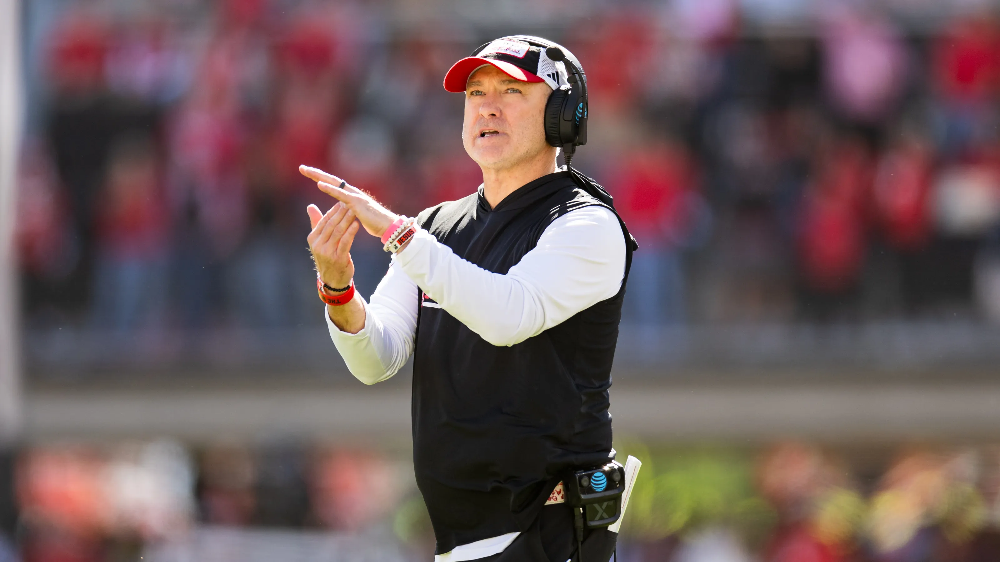
While doing some research into different kinds of head coaches, it became clear i was disrespecting one other strategy that has had success despite a lack of clear upside in the modern landscape of college football, and that's the strategy that I'm going to call the 'McGuire' after Texas Tech's Joey McGuire, though there's plenty of deserving candidates for the name. The 'McGuire' is defined by hiring an assistant head coach or coordinator from another successful power four school, and it's been a staple strategy in college football for good reason. Even just looking at the past ten years, there are plenty of extremely successful hires that have followed this blueprint. BYU's Kimane Sitake and Oregon's Dan Lanning stand out, and Ohio State's Offensive coordinator & wide receivers coach Brian Hartline looks to be the next prime candidate for a team looking to pull it off. It may not have received the buff that the other three strategies have gotten with changes to the transfer portal and NIL, but its continued success points to the most basic principle in hiring a coach: the head coach himself.
Look to every team that's utilized this strategy to great success, and it's obvious what the common trends are. They're all viewed as having the top coaches in all of college football. coaches that are able to get the most out of all their players. look even deeper, though, and another important trend comes to the surface: great success in the transfer portal. Oregon wouldn't have had as close to as much success as they've had without bo nix, dillon gabriel, and dante moore. Texas Tech has built their defense into one of the best in college with the additions of potential first round picks david bailey and romello height. Both have the right people making decisions at the helm, and that goes beyond the head coach and into the front offices that are the new standard in prevaiding (should be a word) college football.
What this seems to indicate is that the 'McGuire' is most effective with a front office in place. As a head coach that has just been hired out of an assistant position, you don't get the benefit of bringing over former players, at least not to the level of a former coach. You're coming into a situation that's completely new to you, and you have to succeed. You don't have the pull to bring in the kind of recruits a former NFL coach could, and you don't have the relevant knowledge to understand how much NIL funding is a reasonable number for any given transfer. Plainly, it's not easy. But, with an effective front office in place, the head coach doesn't have close to as much pressure to build a team. All he has to do is win with the team he's given, and for coordinators that have battled at places like Georgia and Ohio State, doing it everywhere else is easy.
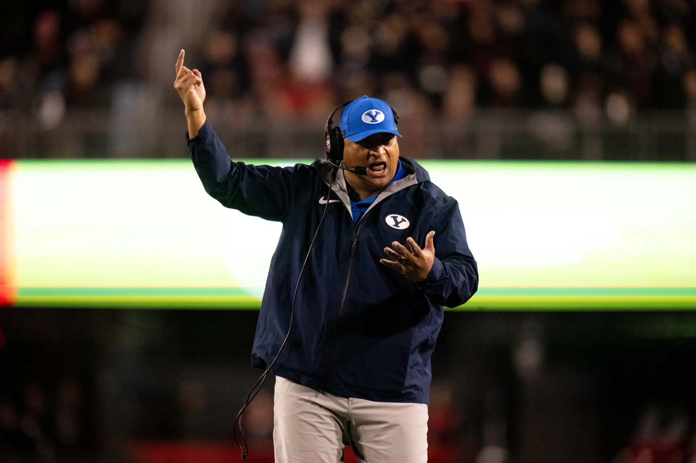
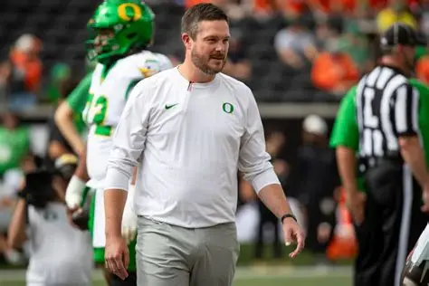
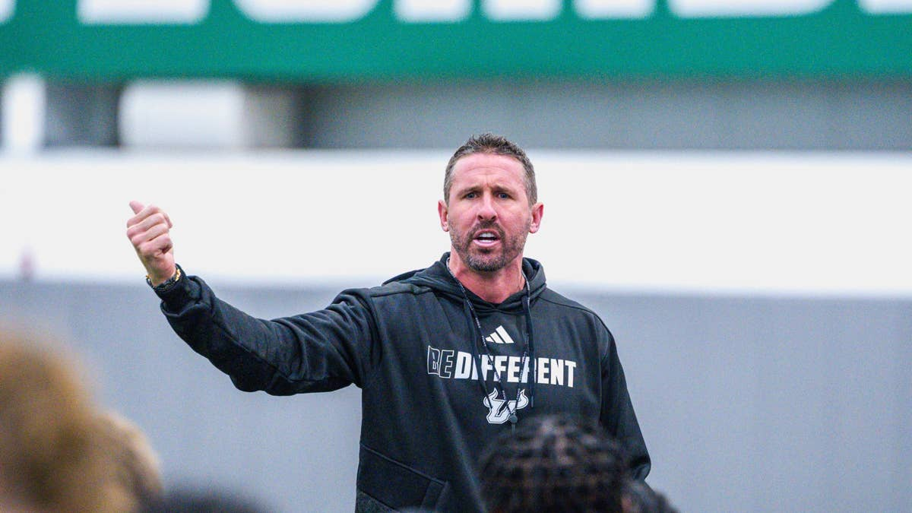
One last thing that seems relevant, especially with the 'McGuire', but to the other strategies as well, is the ability to keep the coach you've hired. To put it simply, if a school like LSU or Florida comes knocking, will they simply take the higher offer with more NIL funding, or are they dedicated to building a national championship team at your school? It's important to hire a candidate that's dedicated to your team, and that's exactly what Indiana, Nebraska, Georgia Tech, and Texas Tech have done. Each coach that I've focused on has their own attachments to the team that they're building. For Cignetti and Rhule, their spots feel like their final destination, I wouldn't be surprised if both continue in their given roles until retirement. For Key and McGuire, their schools feel like home. Key graduated from Georgia Tech and started his coaching career there, and McGuire has coached in Texas for his entire life. When hiring a coach, it should be more than bringing in someone temporarily. It should be about commitment, finding someone that the school believes in to bring them a championship and someone that they believe will stay in that role until the day they step off the football field for the last time.
That's the risk of hiring someone like Brian Hartline. From the outside looking in, he seems like a Ohio State Buckeye through and through. He played there and he made his way through the coaching ranks there. Can he really decide to make somewhere else home, or is hiring him just temporary until Ryan Day retires and Hartline takes the helm? It's a hard part of the coaching search to analyze, but it's an important factor to the greater whole.
One thing that I purposely ignored when looking at each strategy, because it can differ greatly even when using the same strategy, is the total cost. Usually, the 'Key' is by far the cheapest option, the 'Cignetti' costs more because of the NIL cost of the initial transfer wave, the 'McGuire' can depend but is generally a mid-price option, and the 'Rhule' can vary greatly from candidate to candidate depending on experience but generally costs the most. Cost is an important metric in deciding a head coach because college budgets are fairly strict. Often, it takes a noteworthy booster donating a large amount to the NIL fund to pull off the more costly strategies. At the same time, good teams won't let money get in the way of making the right moves. There's risk associated, but to beat Ohio State and Alabama you're going to have to spend a good chunk of change. That's just the way college football operates in the modern era.
THE ANALYSIS
First off, it's important to define what kind of head coach hire is a "success". To start, let's assume that a success was not fired by the given school within a period of six years from their hiring. Even if a head coach had a couple good years, if they were fired that early into their time it's fair to call it a failure in terms of the future of the organization. Next, if any remaining coach has had higher than a .600 win percentage, it's fair to assume their tenure will be a success, even if we may hit some false positives this way. Last, if a coach has transformed their organization enough, it's also fair to say their time has been a success. So, if a head coach has an average winning percentage that is at least 20% higher than the winning percent of the teams' three seasons prior to their hiring, it'll also be considered a successful hiring.
With that being said, just because someone isn't a "success" by these standards doesn't mean they're definitely going to be a failure either. To give some room for doubt for newer head coaches, any coach not marked success will be put into the "TBD" group if their winning percentage is higher than 40% and they're in their third year, higher than 30% and in their second year, or in their first year as a head coach. This will reduce the amount of false negatives in our dataset at a cost of reducing the size of an already small data sample. Still, this is worth it for the integrity of the analysis. The rest of the coaches will be tagged as unsuccessful hires.
Because a lot of this data was hard to retrieve easily, it was more efficient to retrieve a lot of it by hand. First, I used BoW Sports Analytics' College Football Coach Database to get a list of NCAA coaches, when they were hired, and when they left the school. After some data transformation, which you can find in the linked github repo, I had most of the data needed for analysis. This included each coach that was hired in the chosen time frame, the team that they were hired by, how many years they were/have been in the position, if they were fired by that team, and if they are currently the head coach of that team. Next, I manually used my criteria to assign each coach as a successful hire, an unsuccessful hire, or TBD. Last, I went through and assigned each hire to the strategy that fit it best.
For the sake of order, we'll start with the strategy that had the lowest rate of success from 2019-2025 and then go up from there. First, however, it's important to have a baseline, that being the success rate of all college coaches in that time period. Over that span, there were a total of 79 power four coaching hires. Of that 79, 19 were classified as a 'Cignetti', 11 as a 'Brohm', 16 as a 'McGuire', 8 as a 'Rhule', 11 as a 'Key', 10 as a 'Franklin', and 4 as a 'DeBoer'. This showcases the 'Cignetti' and the 'McGuire' as the most popular options, with the 'DeBoer' unsurprisingly the least used due to the scarcity of such candidates on the market. Out of all candidates hired, 39 were clear successes, 27 clear failures, with 13 still to be determined, coming out to a success rate of approximately 59%. These 'TBD' coaches are generally either coaches that have very recently been hired (~2025) or coaches that have had middling success over a few years but haven't been fired. It can probably be assumed that these coaches fall in line with the trends we see in the clearer results.
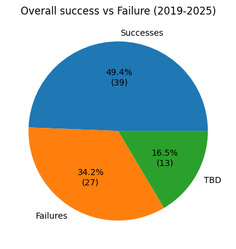
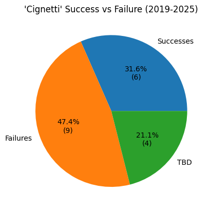
The hiring strategy with the lowest success rate, far below the mean, despite its rampant popularity, was the 'Cignetti'. It boasted a success rate of only 40%, with a gaudy 9 failures to only 6 successes. Among those 6, the only candidate that has come close to Cignetti's success is DeBoer himself, stemming from his hiring at the University of Washington. Seeing these numbers and the overall track record of this type of hire, it's frankly surprising that teams continue to go to this well at such a high rate. Sure, the Cignetti hire may be one of the best decisions in college football history, but it appears to be a significant outlier rather than anything close to the norm for even the highest end result of this kind of hire. Teams will continue to justify it by calling it a high risk/high reward decision, but these results suggest the risk may just not be worth it for this kind of hire.
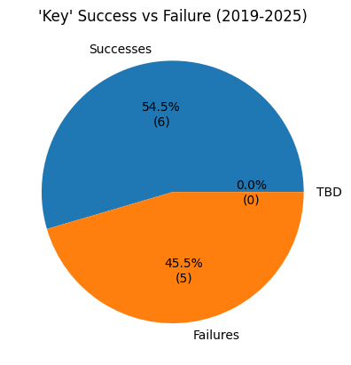
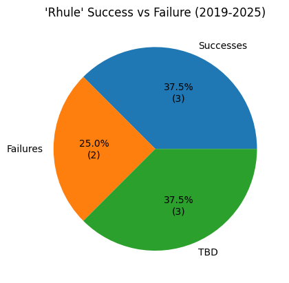

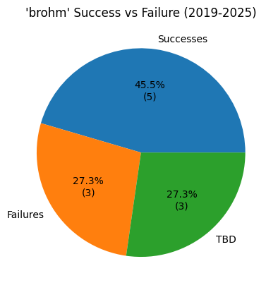
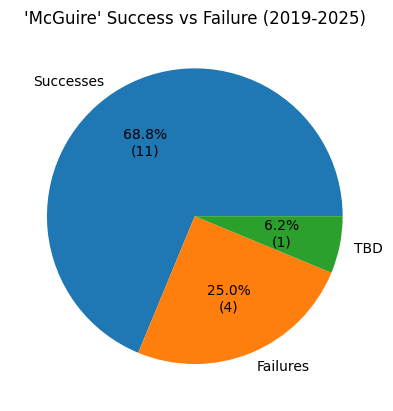
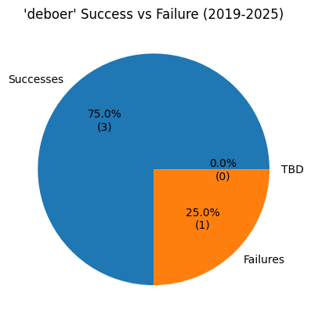
The next four hiring strategies, that being the 'Key', the 'Rhule', the 'Franklin', and the 'Brohm' all had success rates that were comparative to the mean, at 55%, 60%, 63%, and 63% respectively. These all present as reliable strategies as long as the hiring party genuinely believes that the candidate is the right coach for the job. That is to say, given these success rates I wouldn't hire someone from one of these backgrounds because of their resume alone. It would take an extremely strong interview, good words from coaches that'd worked around them in the past, and confidence in the coaches vision for the program.
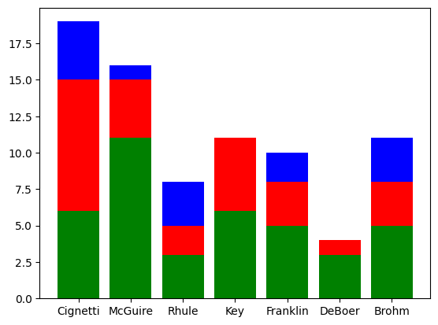
The top two strategies in terms of success rate aren't exactly surprising, but how close they were in that regard was eye-opening. While the 'DeBoer' did have the highest overall success rate, at 75%, granted with a sample size of only four coaches, the 'McGuire' was just behind at a success rate of 73%. The idea that the two most popular strategies are the one with the lowest success rate and the one that has such a high success rate is interesting, but also potentially identifies a flaw in the hiring process of college programs.
Specifically, this result suggests that teams aren't giving enough consideration to coaches without prior head coaching experience, especially coordinators at the most successful programs in the college football landscape. Additionally, it suggests that teams weigh success at non-power four schools far too much in the hiring process. There are generally more than enough of each of these types of candidates to go around, unlike with some other strategies, so in a fully optimized world these two strategies would have a fairly similar success rate. Such a large gap between the 'Cignetti' and the 'McGuire' is a damning indication toward the inefficiency of the college hiring process, even in an environment heavily dominated by analytics.
In terms of comparing the 'DeBoer', the 'Brohm', and the 'Cignetti', it follows that the more established a head coach is, the better chance he'll have of being successful at another school. The only reason the 'DeBoer' isn't the most used strategy is because of scarcity in the coaching market and the high associated cost.
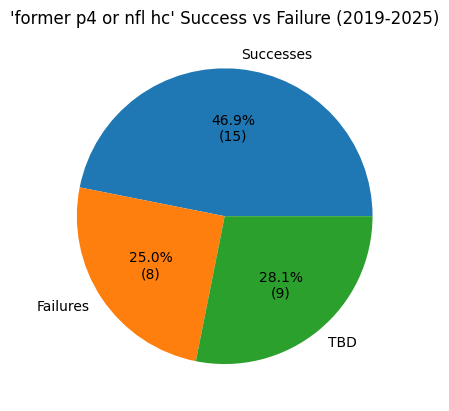
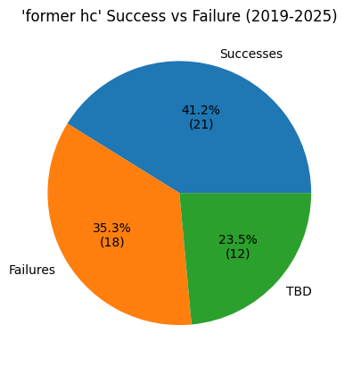
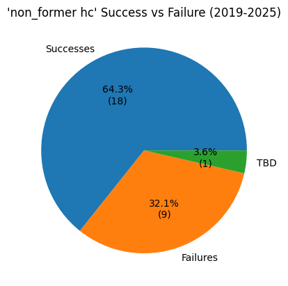
For some other takeaways, I separated these same hires into different categories. Coaches with prior high-level coaching experience, whether at the power four level or in the NFL, had a 65% success rate, a notable margin above the mean but surprisingly low considering how many extremely strong candidates fall within this group. Again, this suggests that lack of head coaching experience should not be a deal-breaker when considering a candidate.
In fact, when including head coaches at any level of Division 1 into this group, the success rate dips all the way to 55%, slightly below the mean. Looking at the exact opposite group, coaches that have never been a head coach above the D2 level, the success rate is at 67%. This is not to say that college shouldn't be hiring coaches with head coaching experience. However, it is an extremely clear indication that either specific kinds of head coaching experience, specifically head coaches of non-power four teams, are being consistently overvalued in the market, and/or candidates without this kind of experience aren't being considered enough for power four positions. Realistically, and looking at the prior results, it's likely a combination of these two factors.
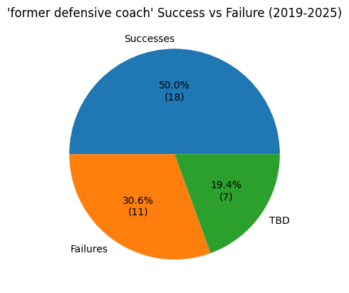
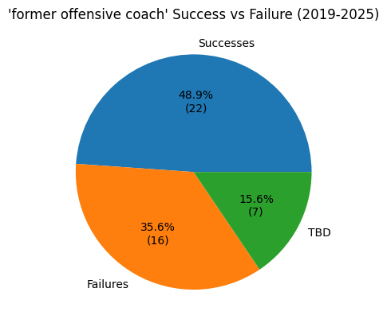
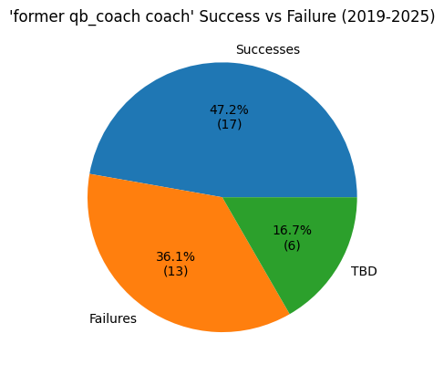
Looking at some quote-unquote desirable traits that teams look for in a head coach to determine if they should be a part of the hiring process, we can find that they don't seem to have a significant factor in coach success. Of all the power four coaches hired from 2019-25, 45 were offensive coaches, 36 were defensive coaches, and 36 were former QB coaches. All three groups had similar success rates to the mean, at 58%, 67%, and 57% respectively. This may suggest that defensive coaches should be valued slightly more than they are, but considering how desired top offensive minds usually are, the difference is unsurprising.
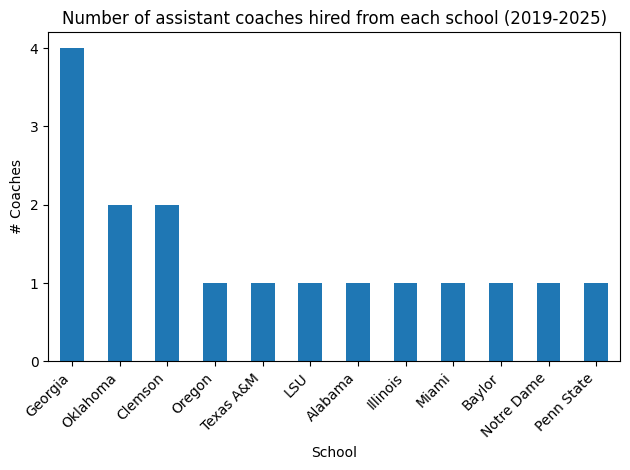
Another interesting point that seemed important, especially with how well 'McGuire' hires usually fare, is which schools they're usually hired from. Georgia has been the most common culprit with the wealth of success they've had on the defensive side of the ball, but most candidates are hired from teams that are consistently competing for playoff victories. The main outliers here are Baylor and Illinois, which point to McGuire and former Purdue head coach Ryan Walters. There's a few potential hypotheses as to the reason for this, but a prevalent one is that teams are far more likely coaches that have seen how the best operate. Those that have worked under Kirby Smart have seen at least a little bit of how he's created such a successful program at Georgia, and this idea is backed up by a long list of such hires in college football history. Even just looking at the coaches of today, Curt Cignetti, Dan Lanning, Pete Golding, Mario Cristobal, and Smart himself all worked under Nick Saban for a significant period of time.
TAKEAWAYS
Hiring a head coach is always going to be about the candidate you're hiring. That includes their background, their personality, the people they've learned from, everything in their make-up that's going to make them a good head coach. Within every hiring strategy that was analyzed here, each one had its magnificent successes, its crash-and-burn failures, and everything in between. If you determined who you were hiring by straight up success rate, Curt Cignetti would have never been given a shot out of JMU, and Indiana would likely be the same failing team that they were before he was hired. With that being said, it's irresponsible to ignore the stark differences in the rate of success between the strategies. Too many teams are continuing to attempt the Cignetti, while the McGuire remains the king among the moves that are readily available for the average power four team. While Penn State and LSU play it safe with the DeBoer, hiring Matt Campbell and Lane Kiffin. While Cal, Kentucky, and USF make the statistically correct move by deploying the McGuire, hiring Tosh Lupoi, Will Stein, and Brian Hartline. While JMU, Michigan State, and Virginia Tech use the Franklin and Ole Miss, Kansas State, and Utah go with the Key, teams like Auburn, Florida, and UCLA are taking a significant risk in trying to hire the next Curt Cignetti. That's not to say all of them will fail, hell, I'm personally a big fan of the Chesney hire for UCLA or the Eric Morris hire for Oklahoma State. But they're playing with bad odds, so they better make damn sure they believe in the head coach they're giving the keys to.